Designing RummyCulture’s payments— making add cash easy for players.
Payments is the screen between deciding to play and sitting at a table. On RummyCulture it
has a lot to do in a few seconds: take money from a bank, show where the GST goes, check
location and KYC, and keep working when a UPI app or a bank doesn’t. This is the story of
the payment page, and of every way a payment can go.
On RummyCulture you can practise for free. But to sit at a cash table or join a tournament,
you need money in your account, so whatever you opened the app to play, the first real step
is the same: Payments.
You type ₹1,000 and hit Continue. Now there’s a page full of ways to pay, a game waiting on
the other side, and one question you don’t say out loud.
“What if the money leaves my account and never shows up?”
Every player who reaches this page carries that question. Everything below is an answer to it.
My role
Leading the design, and the room around it
I led a team of two designers on Payments. Beyond the screens, my job was to keep everyone
pointed at the same thing: a player adding cash with whichever method they trust, and feeling
their money is safe the whole way through.
What I owned
🧭
Scope and numbers
Worked through the scope and success numbers with product: which methods and states to cover, and what would tell us it was working.
🤝
One plan across teams
Kept the PM, engineers and leadership aligned on how the design would be executed, from the first flows to what shipped.
🔐
Safe, every step
Responsible for how adding cash feels end to end, across UPI, cards, wallets and net banking, so the money never feels at risk.
👥
A team of two
Led two designers through the work, alongside Rahul Singla as PM.
01 · The context
The most nervous screen in a fun app
Everything else in RummyCulture is built for play: tables, tournaments, leaderboards, offers.
Payments is the one place where real money leaves a player’s bank. For a lot of people, it’s
the first time they’ve paid a game anything at all.
It also carries rules most players never think about. Every deposit is taxed at 28% GST, so
adding ₹1,000 puts ₹781.25 in Deposit Balance and gives ₹218.75 back as Discount Credits.
Some states don’t allow real-money play at all. The app checks location to keep accounts
safe, and sometimes asks for KYC. Saved cards follow RBI rules. And payment apps, like any
system, have bad hours.
What the page had to hold
⚡
Four ways to pay, at a glance
UPI apps, cards, wallets and net banking, plus a UPI ID for anyone whose app isn’t listed.
🧾
GST that adds up
What you paid, what went to tax, and what you can play with, in one place.
📍
Checks before money
Location and KYC, asked for when they’re needed, with one line on why.
🔐
Cards, saved the RBI way
A card is saved only when the player agrees, with a line that says why it’s safe.
🚦
Methods that fail
When a UPI app or a bank is struggling, players should know before they tap.
🔁
The second visit
A returning player shouldn’t have to choose all over again.
02 · What we promised
Four promises to the person holding the phone
01
Don’t make them hunt.
The method they’re most likely to use sits at the top. Picking it opens the button right there, without a second screen.
02
Say the amount, every time.
Buttons read Add ₹1,000, Proceed to Add ₹1,000, Add Remaining ₹20. Money never moves behind a word like Pay or Submit.
03
After a failure, talk about their money first.
Before asking anyone to retry, tell them what happens to anything that was deducted.
04
Warn, then steer.
If a method is failing, say so before they tap it, and put one that’s working above it.
A payment page is judged on its worst minute.So a lot of this one is about that minute.
03 · The page
One list, read top to bottom
Every flow starts from the same list. We grouped the methods by where the money lives and
gave each group one clear action: tap an app, add a card, link a wallet, or choose a bank. Nothing on the
page asks the player to read more than a line.
✏️ The bones of it
Without colour or logos, the page comes down to a few boxes in a fixed order: the amount, the
methods grouped by where the money lives, and one button under the chosen method.
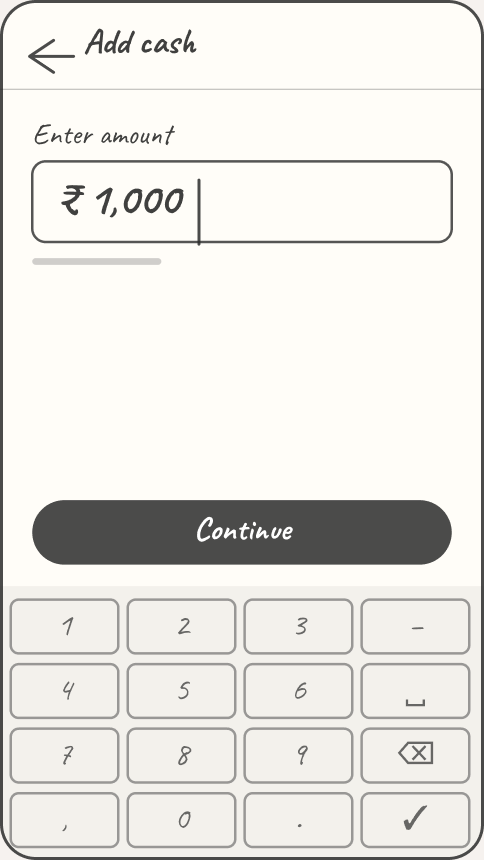
How much? One field, one button.
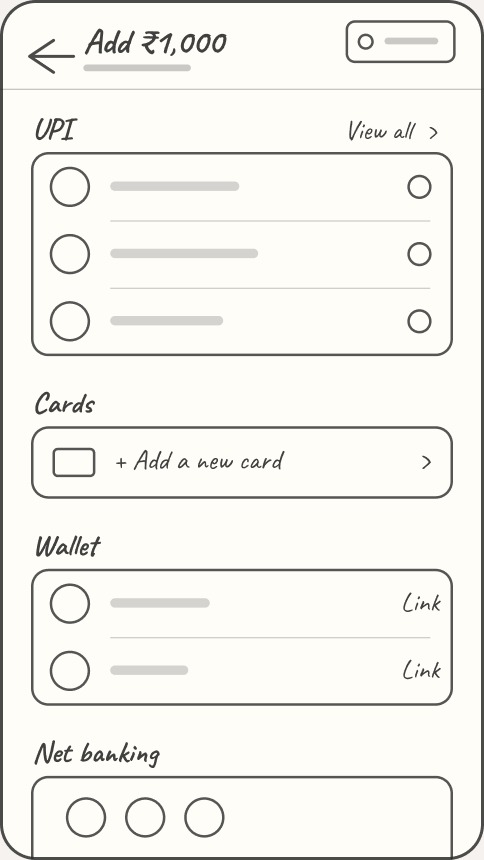
Grouped by where the money lives.
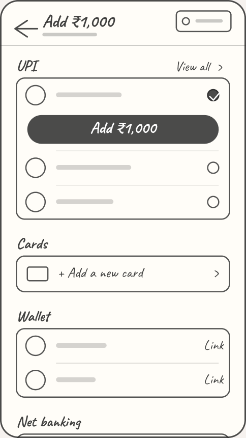
Pick one, and its button opens.
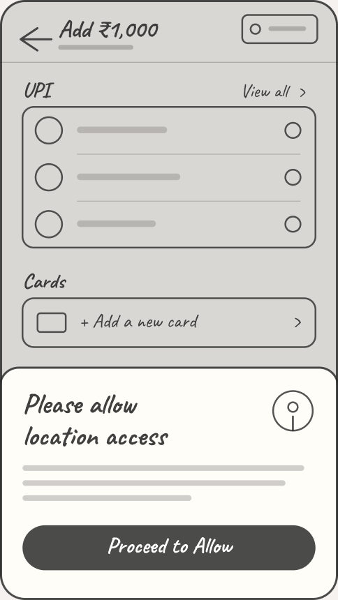
One line on why, one button.
Amount on top
Add ₹1,000 stays pinned at the top. View details opens the GST split.
UPI first
One tap, one PIN. The three apps people use most are right on the page.
One clear action per method
Each payment type has a single next step: tap a UPI app, add a card, link a wallet, or choose a bank.
Trust, up front
Safe & secure payments sits where the eye lands first.
Link once, not every time
Wallets link on their own screen with an OTP, then stay linked.
The long tail, one tap away
View All and All Banks hold every other app and bank.
💰 It starts with an amount
Payments opens with one question: how much? The field takes anything from ₹50, and Continue
stays dimmed until there’s an amount in it. Type ₹1,000 and it lights up at the bottom, under
the player’s thumb, one tap from the payment page. And if they want to check the maths first,
View details at the top opens the full split: ₹218.75 to GST, the same back as Discount
Credits, and a Buy-In Value of 1,000.
Choose an amount→
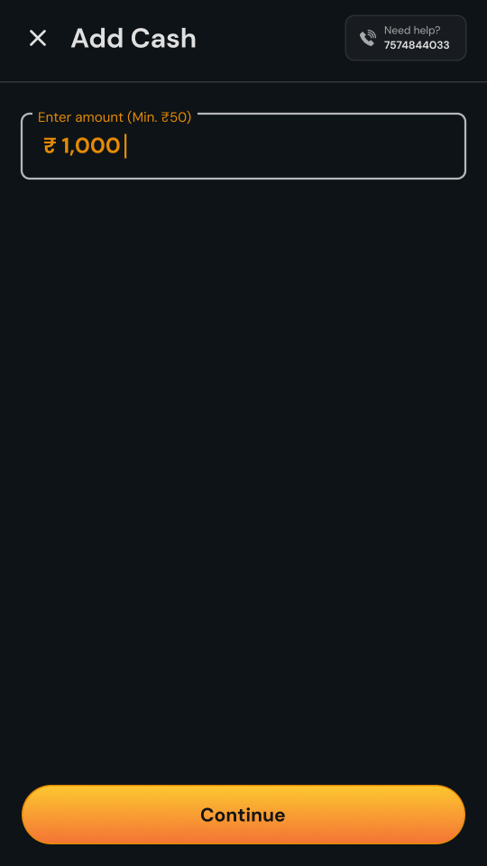
₹1,000 entered, Continue on→Then, how to pay→View details: where the money goes
04 · Every way a payment can go
Ten journeys, one page
Here’s each path through the page, from the first permission to the receipt. These are the
real flows, including the screens a player only sees on a bad day.
📍 Before any money moves
A new player’s first step isn’t a payment, it’s a permission. The sheet says exactly why the
app wants their location: “to detect any suspicious activity and keep your account safe.” Then Android asks in its own words. If they say no, the next sheet doesn’t plead. It says what’s needed and opens Settings.
Where real-money play isn’t allowed, the page says so plainly and offers practice games
instead of a dead end. KYC follows the same pattern: one sentence on why, one button.
Why we ask
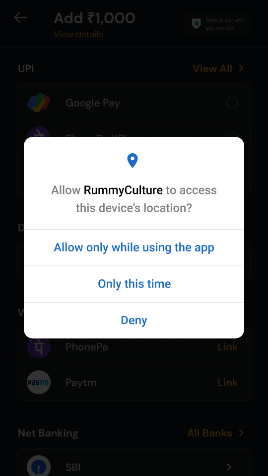
Android asksIf they say noNot allowed hereKYC, when it’s needed
📱 First time, paying with UPI
Pick an app and the button opens right under it: Add ₹1,000. There’s no review screen in
between, because the amount is already on the button. If their app isn’t one of the three
on the page, View All has the rest.
The list
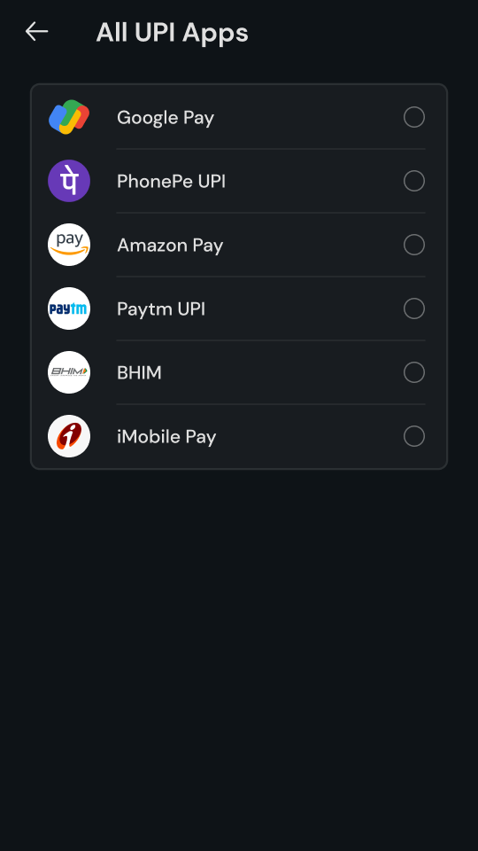
All UPI appsTap, and the button opens
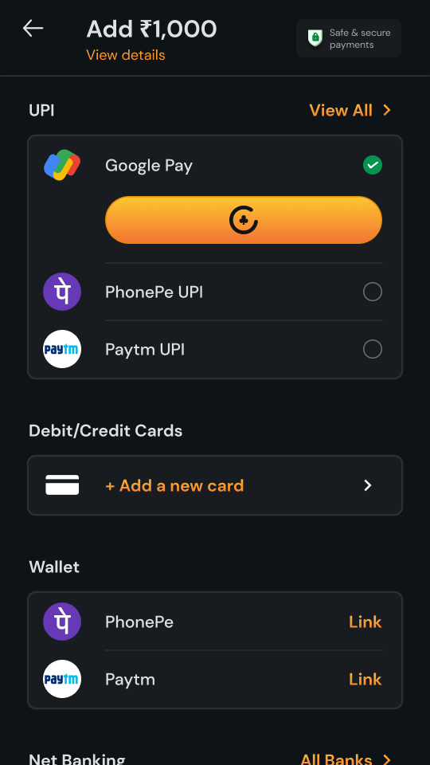
Over to the UPI app
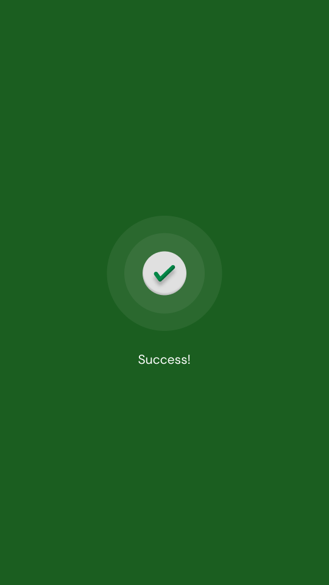
Done
🆔 Paying with a UPI ID
Some players use an app we can’t open, or would rather type. They can enter a UPI ID, choose
to save it for next time, and pay. The button still carries the amount.
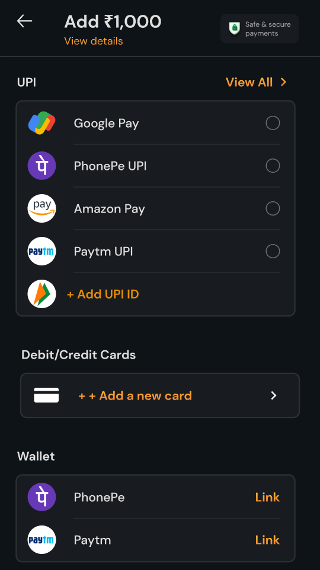
+ Add UPI IDKeyboard upTyped and saved
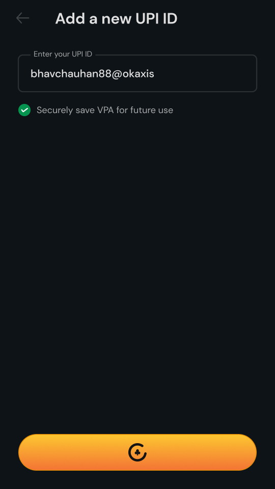
Ready to pay
💳 Adding a card
The keyboard opens on its own, and the card network shows up as soon as the number gives it
away. Saving the card is the player’s choice, with one line on why it’s safe: “Secure this
card as per RBI guidelines.”
Cards we can’t take, like Amex and Diners, are named in the error, so nobody keeps retyping a
number that was never going to work. Next time, the card waits at the top, and only the CVV
is asked again.
Empty, keyboard upNetwork detectedA card we can’t take
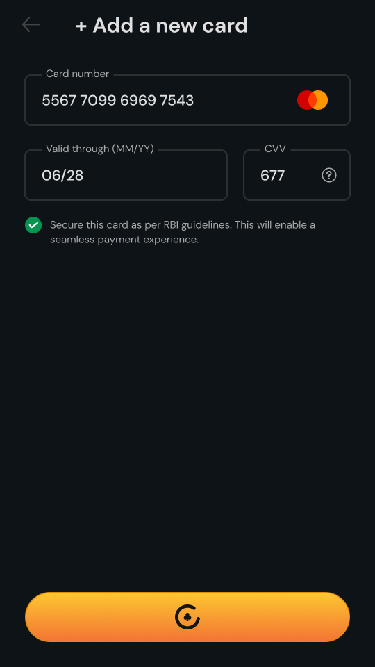
ProcessingNext time, just the CVV
👛 Linking a wallet
Wallets link once, with an OTP. Before the code goes out, the sheet shows which number it will
go to, so nobody waits on a phone they don’t have. Resend unlocks after 15 seconds, and too
many tries get a clear message instead of a silent failure.
Once linked, the balance sits next to the wallet. If it’s short, the page says so, “Low
balance. Add ₹20 in your wallet”, and the button does the maths: Add Remaining ₹20.
Which numberEnter the OTPToo many tries
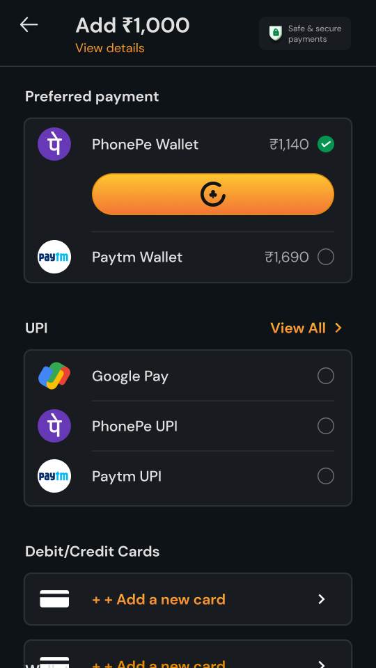
Paying from the wallet
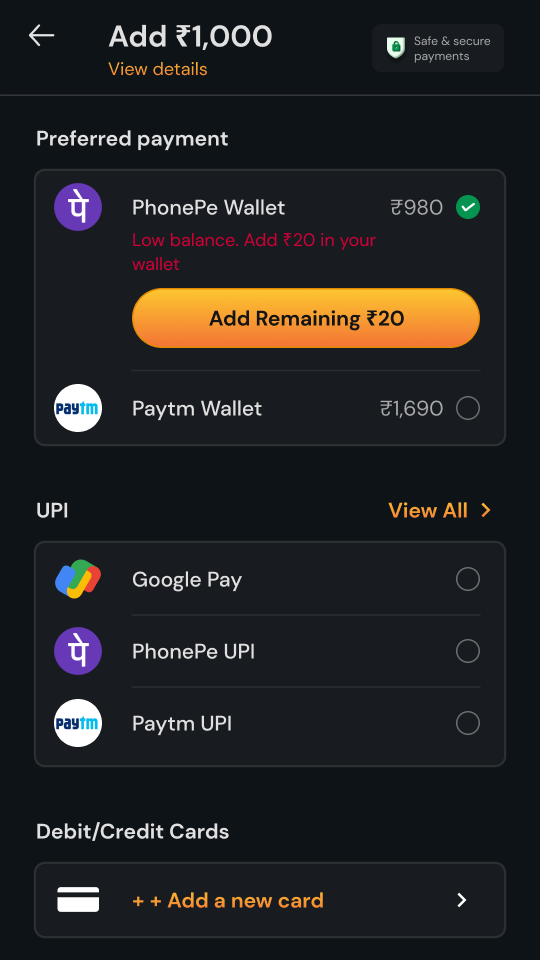
Short by ₹20
🏦 Net banking
Net banking is the longest route, and for some players the one they trust most. The big banks
sit right on the page. Everyone else is in All Banks, with a search box on top, so a smaller
bank is a couple of letters away.
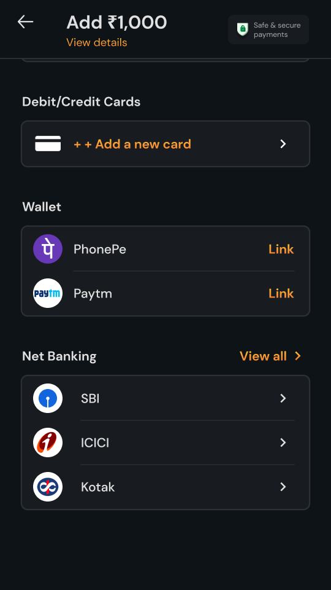
Big banks on the page
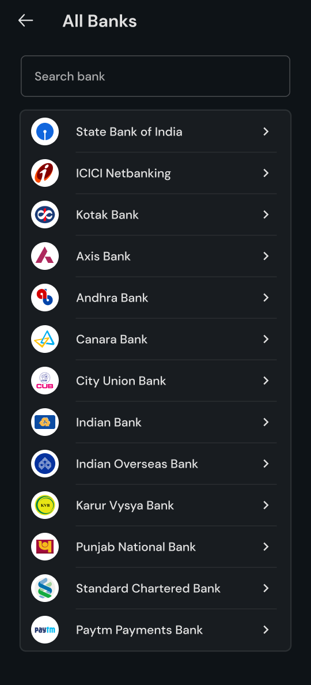
All Banks
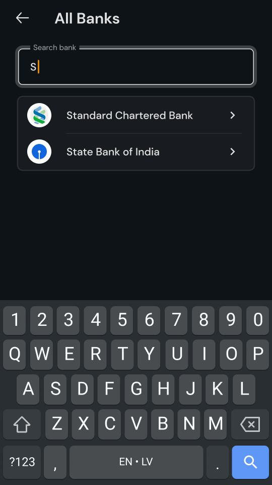
SearchDone
🔁 Coming back
The second visit should be faster than the first. Whatever they paid with last moves up to
Preferred payment, open and ready, showing a wallet balance or the last four digits of a card.
Everything else is still below, for the days they want something different.
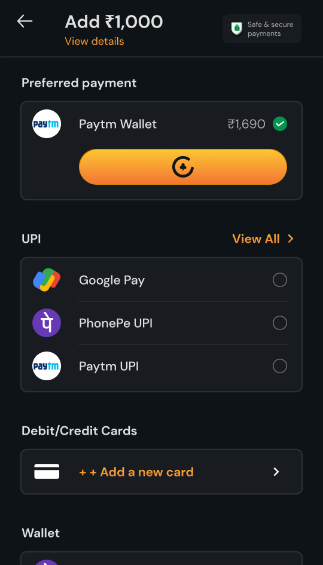
The second visit
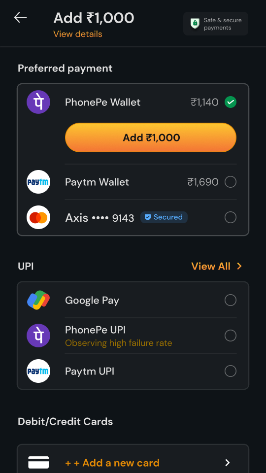
Wallet, ready to go
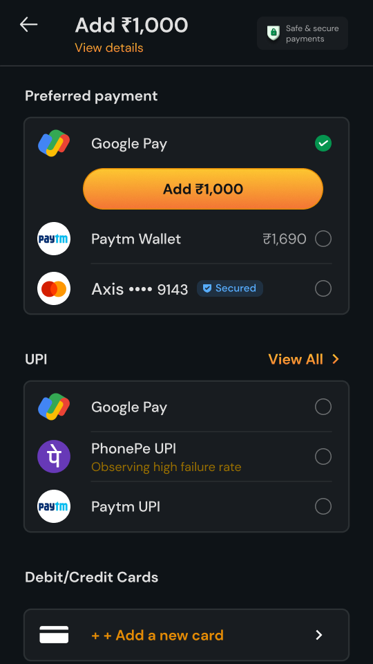
Google Pay, last usedTwo cards saved
🚦 When a method is having a bad day
Payment apps and banks have bad hours, and a player shouldn’t find out by waiting on one. When
a method’s success rate drops, it says so under its name, in plain words: “Experiencing low
success rate” or “Observing high failure rate.”
If the whole of UPI is struggling, the section moves to the bottom and dims, with one line on
top: “UPI is facing issues. We recommend you to use another payment mode.” Cards get a nudge at
the same moment, Flat ₹25 FreeCash on add cash using cards, so the way forward is also the
better deal.
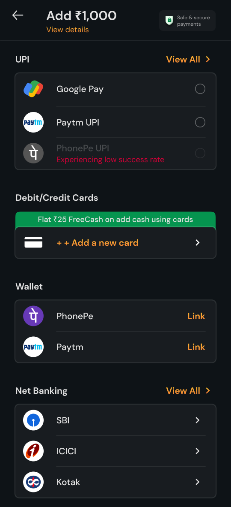
One app strugglingFlagged, even when preferredAll of UPI struggling
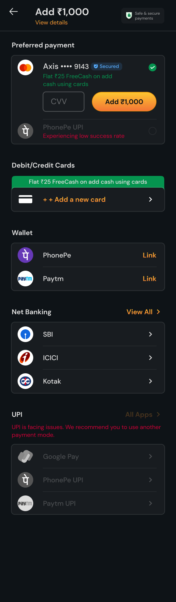
UPI moved down and dimmed
Three ways to handle a failing method
❌ Hide it
Someone who always pays with PhonePe finds it gone. It feels like a bug.
❌ Let them find out
They tap, wait for the app and then fail, with the clock still running.
✅ Say it, dim it, move it
They see the problem before they tap, with a working option right above.
😟 When it doesn’t go through
Some payments fail anyway. The sheet that follows starts with what matters most to the
player, their money: anything that was deducted comes back within 5–7 bank working days. Then
a transaction ID they can quote to support, and two ways forward: retry with the same app, or
try another method.
Their money, firstRetry, or switch
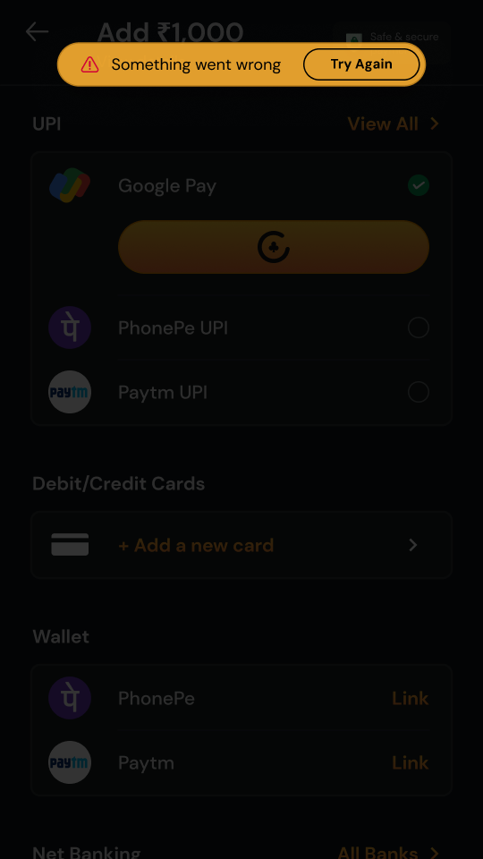
Something went wrong
🎁 An offer, at the right moment
The offer isn’t for everyone. It’s for two moments when a player might walk away. New players
get it on each of their first three deposits: add ₹1,000, get 1,200 in the wallet. Returning
players get it once a month, after an add cash fails, so a bad moment ends with a reason to try
again. Everyone else sees the page as it is. One offer, two jobs: an easier way in, and fewer
players lost to a failure.
New player
First three deposits
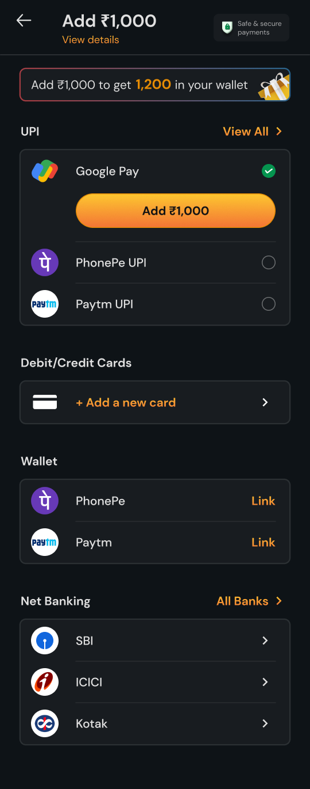
The offer, right at the top
Returning player
After a failed add cash, once a month
It didn’t go throughBack on the page, with the offer
Everyone else
No offer
The page, as it is
🎉 When it does
Success gets a full green screen for a second, because a payment that worked deserves a
moment. Then the receipt answers the GST question in one table: ₹1,000 added, ₹218.75 paid to
the government, ₹781.25 into Deposit Balance and ₹218.75 back as Discount Credits. The Buy-In
Value is 1,000, the same number the player paid.
A moment
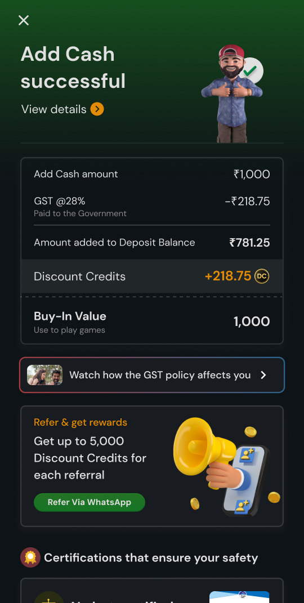
The receipt
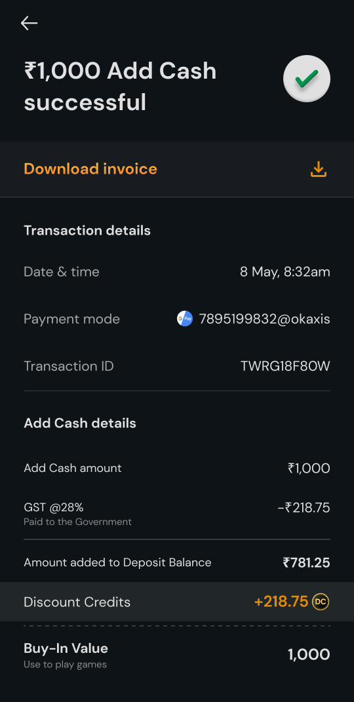
Full details
05 · What happened next
The numbers
The numbers that mattered here were the quiet ones: did the money go through, did players make
it to the table, and when a payment failed, did they trust it enough to try again? With the
improvements that followed, this is where it landed.
92%+payment success rate, across every method
60%+of players on the payment page went on to add cash
70%+converted when an offer was on
50%+tried again after a failed payment
1×add cash per daily active player. With 28% GST on every deposit, players top up once to save on it, and we encouraged that.
06 · Reflection
What this project taught me
The quiet screens carry the most weight.
Most of this work is screens a player hopes never to see: an OTP limit, a struggling bank, money stuck in between. Those screens decide whether someone trusts the app with their money again.
One number, all the way through.
The amount a player types should follow them everywhere: into the button, the sheet and the receipt. When ₹1,000 means ₹1,000 at every step, there’s nothing left to double-check.
Their money first, then the ask.
When something fails, say what’s happening to the money before asking them to try again. Reassurance is what earns the retry.
Be honest before it breaks.
Telling a player that UPI is struggling, and showing another way to pay, is kinder than letting them find out halfway through a payment.
Save the offer for the moments that matter.
An offer shown to everyone is just noise. Kept for a first deposit or a bad moment, it gives a hesitant player a reason to stay.